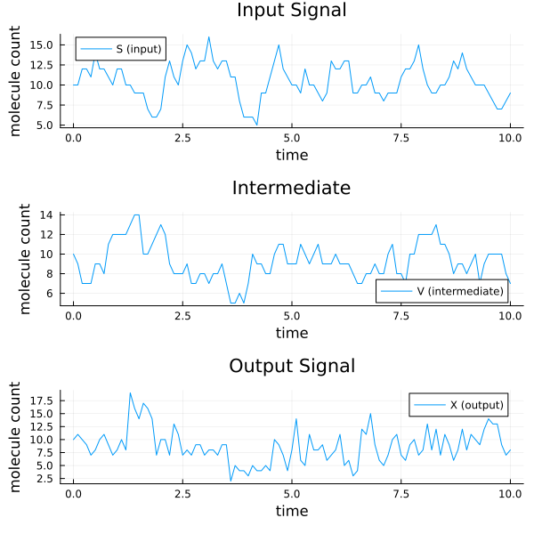
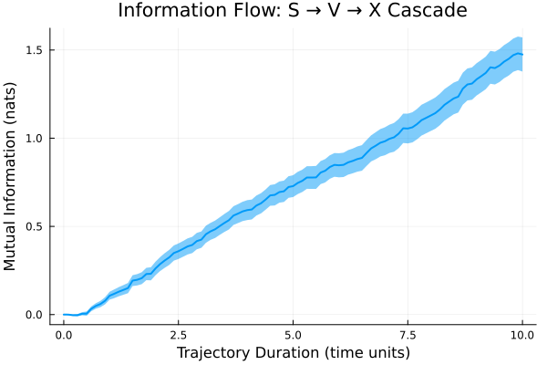
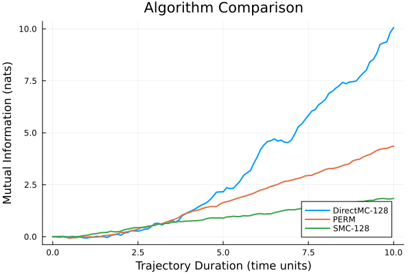
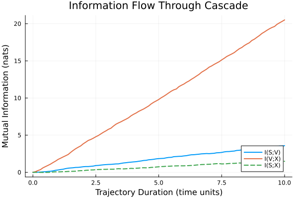

Three-Species Cascade Tutorial
This tutorial demonstrates how to analyze information flow through a cascade of three molecular species: S → V → X. This example illustrates several important concepts:
- Working with multi-species reaction networks
- Understanding cascade information transmission
- Comparing different estimation algorithms
- Interpreting mutual information results
The Cascade Model
We consider a simple cascade where:
- S is the input signal (first species)
- V is an intermediate species
- X is the output signal (final species)
Information flows from S to V to X through the following reactions:
Reaction 1: ∅ → S (rate κ) # S production
Reaction 2: S → ∅ (rate λ·S) # S degradation
Reaction 3: S → S+V (rate ρ·S) # V production (catalyzed by S)
Reaction 4: V → ∅ (rate μ·V) # V degradation
Reaction 5: V → V+X (rate ρ₂·V) # X production (catalyzed by V)
Reaction 6: X → ∅ (rate μ₂·X) # X degradationThis represents a signaling cascade where:
- S molecules are produced at constant rate κ and degrade with rate proportional to their abundance
- V production requires S (activation)
- X production requires V (activation)
Setting Up the System
First, let's define the reaction network parameters:
import PathWeightSampling as PWS
using StaticArrays
using Plots
using Statistics
using DataFrames
# Reaction rate parameters
κ = 10.0 # S production rate
λ = 1.0 # S degradation rate
ρ = 1.0 # V production rate (per S molecule)
μ = 1.0 # V degradation rate
ρ₂ = 10.0 # X production rate (per V molecule)
μ₂ = 10.0 # X degradation rate
# Reactant stoichiometry for each reaction
# (empty list means no reactants, [i => n] means n molecules of species i)
rstoich = [
Pair{Int, Int}[], # Reaction 1: ∅ → S (no reactants)
[1 => 1], # Reaction 2: S → ∅ (1 molecule of species 1)
[1 => 1], # Reaction 3: S → S+V (1 molecule of species 1)
[2 => 1], # Reaction 4: V → ∅ (1 molecule of species 2)
[2 => 1], # Reaction 5: V → V+X (1 molecule of species 2)
[3 => 1] # Reaction 6: X → ∅ (1 molecule of species 3)
]
# Net stoichiometry changes for each reaction
nstoich = [
[1 => 1], # Reaction 1: +1 S
[1 => -1], # Reaction 2: -1 S
[2 => 1], # Reaction 3: +1 V (S unchanged)
[2 => -1], # Reaction 4: -1 V
[3 => 1], # Reaction 5: +1 X (V unchanged)
[3 => -1] # Reaction 6: -1 X
]
species = [:S, :V, :X]Defining State-Dependent Reaction Rates
Since our reaction rates depend on the state (e.g., λ·S for reaction 2), we need to define a callable object that computes rates:
# Define a struct to hold rate parameters
struct CascadeRates
κ::Float64
λ::Float64
ρ::Float64
μ::Float64
ρ₂::Float64
μ₂::Float64
end
# Make it callable: given reaction index and state, return the rate
function (rates::CascadeRates)(rxidx, u::AbstractVector)
if rxidx == 1
rates.κ # Constant S production
elseif rxidx == 2
u[1] * rates.λ # S degradation (proportional to S)
elseif rxidx == 3
u[1] * rates.ρ # V production (proportional to S)
elseif rxidx == 4
u[2] * rates.μ # V degradation (proportional to V)
elseif rxidx == 5
u[2] * rates.ρ₂ # X production (proportional to V)
elseif rxidx == 6
u[3] * rates.μ₂ # X degradation (proportional to X)
else
0.0
end
end
# Create the rate functor
rate_functor = CascadeRates(κ, λ, ρ, μ, ρ₂, μ₂)Creating the Markov Jump System
Now we can assemble everything into a MarkovJumpSystem:
# Create the reaction set with state-dependent rates
jumps = PWS.SSA.ConstantRateJumps(rate_functor, rstoich, nstoich, species)
# Calculate equilibrium initial conditions
# At equilibrium: production = degradation for each species
u0 = SA{Int16}[
Int16(κ / λ), # E[S] = κ/λ
Int16(κ / λ * ρ / μ), # E[V] = E[S]·ρ/μ
Int16(κ / λ * ρ / μ * ρ₂ / μ₂) # E[X] = E[V]·ρ₂/μ₂
]
# Time span and observation times
tspan = (0.0, 10.0)
# Create the system
# S is the input, X is the output
system = PWS.MarkovJumpSystem(
PWS.GillespieDirect(),
jumps,
u0,
tspan,
:S, # Input species
:X, # Output species
0.1 # Time step for observations (dt)
)MarkovJumpSystem with 3 species and 6 reactions
PathWeightSampling.SSA.ConstantRateJumps{Main.CascadeRates, Vector{Vector{Pair{Int64, Int64}}}, Vector{Vector{Pair{Int64, Int64}}}}(Main.CascadeRates(10.0, 1.0, 1.0, 1.0, 10.0, 10.0), [Pair{Int64, Int64}[], [1 => 1], [1 => 1], [2 => 1], [2 => 1], [3 => 1]], [[1 => 1], [1 => -1], [2 => 1], [2 => -1], [3 => 1], [3 => -1]], [:S, :V, :X])
Initial condition:
S = 10
V = 10
X = 10Generating and Visualizing Trajectories
Let's generate a sample trajectory to see how the cascade behaves:
# Generate a configuration (input and output trajectories)
conf = PWS.generate_configuration(system)
# Plot all three species
times = conf.discrete_times
p1 = plot(times, conf.traj[1, :], label="S (input)",
xlabel="time", ylabel="molecule count", title="Input Signal")
p2 = plot(times, conf.traj[2, :], label="V (intermediate)",
xlabel="time", ylabel="molecule count", title="Intermediate")
p3 = plot(times, conf.traj[3, :], label="X (output)",
xlabel="time", ylabel="molecule count", title="Output Signal")
plot(p1, p2, p3, layout=(3, 1), size=(600, 600))
Notice how:
- S (input) fluctuates around its equilibrium value κ/λ = 10
- V (intermediate) responds to S with some delay
- X (output) responds to V, showing the cascade effect
Computing Mutual Information
Now let's compute how much information flows from S to X through the cascade:
# Compute mutual information using SMC algorithm
result = PWS.mutual_information(
system,
PWS.SMCEstimate(128), # Use 128 particles
num_samples=500, # Take 500 Monte Carlo samples
progress=false
)
# Aggregate results by time
sem(x) = std(x) / sqrt(length(x)) # Standard error of mean
df = combine(
groupby(result.result, :time),
:MutualInformation => mean => :MI,
:MutualInformation => sem => :SEM
)
# Plot mutual information vs trajectory duration
plot(
df.time,
df.MI,
ribbon=df.SEM,
xlabel="Trajectory Duration (time units)",
ylabel="Mutual Information (nats)",
title="Information Flow: S → V → X Cascade",
legend=false,
linewidth=2
)
Interpreting the Results
The plot shows several important features:
Initial Growth: Mutual information increases as trajectory duration increases, indicating information accumulation over time
Saturation: The MI approaches a limiting value, suggesting that longer trajectories don't provide proportionally more information (due to correlations)
Information Transmission Rate: The slope of the MI curve gives the rate of information transmission through the cascade
We can estimate the information transmission rate from the linear region:
# Estimate transmission rate from the slope between t=2 and t=8
idx_start = findfirst(df.time .>= 2.0)
idx_end = findfirst(df.time .>= 8.0)
if !isnothing(idx_start) && !isnothing(idx_end)
Δt = df.time[idx_end] - df.time[idx_start]
ΔMI = df.MI[idx_end] - df.MI[idx_start]
rate = ΔMI / Δt
println("Estimated information transmission rate: $(round(rate, digits=3)) nats/time")
endEstimated information transmission rate: 0.163 nats/timeComparing Estimation Algorithms
Different algorithms have different accuracy-speed tradeoffs. Let's compare:
# Define algorithms to test
algorithms = [
PWS.DirectMCEstimate(128),
PWS.SMCEstimate(128),
PWS.PERM(16)
]
# Run each algorithm (using fewer samples for speed)
results = Dict()
for alg in algorithms
res = PWS.mutual_information(system, alg, num_samples=100, progress=false)
results[PWS.name(alg)] = res.result
end
# Plot comparison
plot(legend=:bottomright)
for (name, data) in results
df_alg = combine(groupby(data, :time), :MutualInformation => mean => :MI)
plot!(df_alg.time, df_alg.MI, label=name, linewidth=2)
end
xlabel!("Trajectory Duration (time units)")
ylabel!("Mutual Information (nats)")
title!("Algorithm Comparison")
All algorithms should produce similar results if working correctly. Differences indicate:
- Statistical fluctuations (reduce with more samples)
- Algorithm-specific biases (check parameters)
Analyzing Information Loss
A key question in cascade systems is: how much information is lost at each step?
We can compute the mutual information between different pairs:
# Create systems for each pair
# S → V (intermediate step)
system_SV = PWS.MarkovJumpSystem(
PWS.GillespieDirect(),
jumps,
u0,
tspan,
:S, # Input
:V, # Output (intermediate as output)
0.1
)
# V → X (final step)
system_VX = PWS.MarkovJumpSystem(
PWS.GillespieDirect(),
jumps,
u0,
tspan,
:V, # Input (intermediate as input)
:X, # Output
0.1
)
# Compute MI for each pair
result_SV = PWS.mutual_information(system_SV, PWS.SMCEstimate(128),
num_samples=200, progress=false)
result_VX = PWS.mutual_information(system_VX, PWS.SMCEstimate(128),
num_samples=200, progress=false)
result_SX = PWS.mutual_information(system, PWS.SMCEstimate(128),
num_samples=200, progress=false)
# Aggregate and plot
df_SV = combine(groupby(result_SV.result, :time), :MutualInformation => mean => :MI)
df_VX = combine(groupby(result_VX.result, :time), :MutualInformation => mean => :MI)
df_SX = combine(groupby(result_SX.result, :time), :MutualInformation => mean => :MI)
plot(legend=:bottomright)
plot!(df_SV.time, df_SV.MI, label="I(S;V)", linewidth=2)
plot!(df_VX.time, df_VX.MI, label="I(V;X)", linewidth=2)
plot!(df_SX.time, df_SX.MI, label="I(S;X)", linewidth=2, linestyle=:dash)
xlabel!("Trajectory Duration (time units)")
ylabel!("Mutual Information (nats)")
title!("Information Flow Through Cascade")
The data processing inequality states that I(S;X) ≤ min(I(S;V), I(V;X)), meaning information cannot increase through processing. The plot shows:
- Information from S to V (first step)
- Information from V to X (second step)
- Total information from S to X (cannot exceed either step)